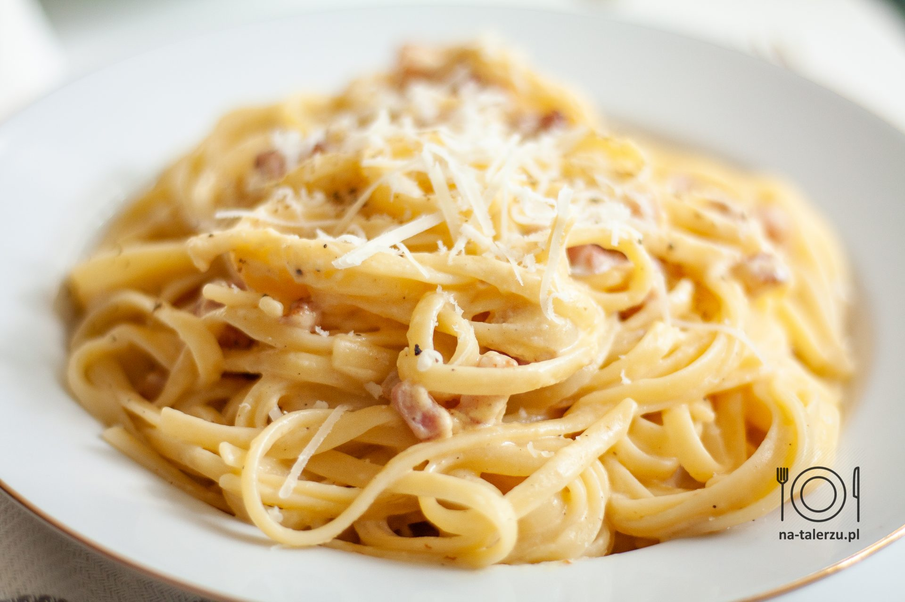

Spaghetti Carbonara to błyskawiczne do przygotowania, a jednocześnie bardzo smaczne danie kuchni włoskiej.
makaron z kremowym sosie jajecznym z dodatkiem boczku.
W tym przepisie przedstawiam Wam wersję z dodatkiem śmietany.
Składniki
- 200 g makaronu spaghetti
- 100 g boczku
- 2 jajka
- 100 g słodkiej, płynnej śmietanki 30%
- 30 g startego sera Pecorino (Parmezanu lub Grana Padano)+ trochę do posypania
- sól, czarny pieprz świeżo zmielony
- posiekana natka pietruszki (opcjonalnie)
Przygotowanie
- Makaron ugotować w osolonej wodzie, według przepisu na opakowaniu. Odcedzić. Nie przelewać wodą!
- Boczek pokroić w drobną kostkę. Podsmażyć na patelni na niskiej mocy palnika, aż się lekko zarumieni. (Jeśli boczek jest bardzo chudy, dodać łyżkę oleju).
- Śmietankę, jajka, ser, szczyptę soli i dość dużą ilość pieprzu przełożyć do miski (najlepiej wysokiej i wąskiej) i zmiksować blenderem.
- Ugotowany makaron dodać do gorącego boczku. Przesmażyć, mieszając przez ok. 1 minutę. Patelnię ściągnąć z palnika, dodać masę jajeczną i wymieszać. Można dodać też posiekaną natkę pietruszki. Mieszać przez chwilę, aż wszystkie składniki dobrze się połączą, a sos lekko zgęstnieje. (Lepiej nie mieszać na palniku, żeby nie zrobiła się jajecznica!).
- Wyłożyć na talerze i posypać resztą startego sera.
Powrót na górę strony
Powrót na stronę główną